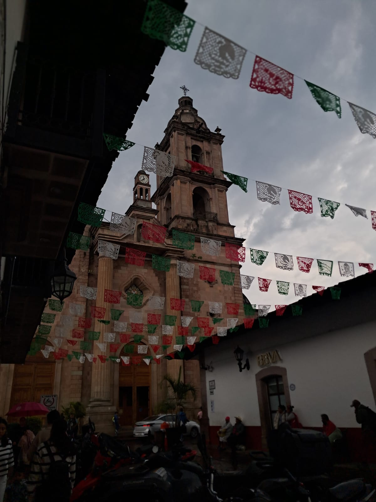
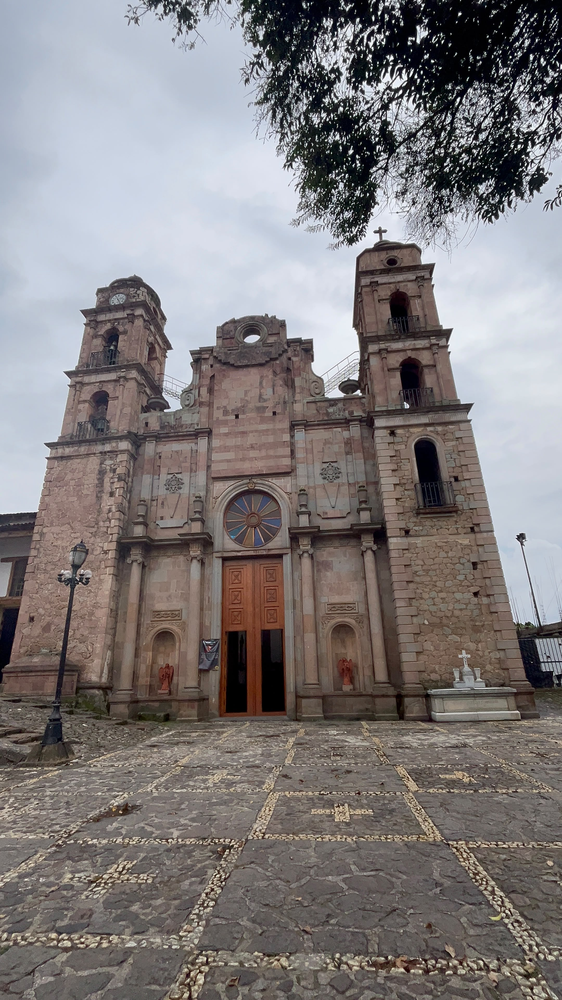
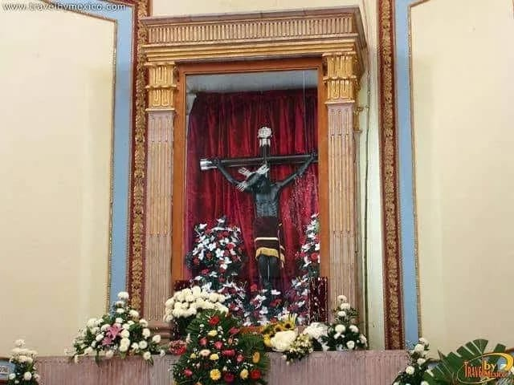

PARROQUIA DE SAN FRANCISCO DE ASÍS

La Parroquia de San Francisco de Asís es uno de los edificios religiosos más representativos de Valle de Bravo. Se encuentra en el centro del municipio y destaca por su arquitectura y su importancia histórica y cultural.
Este templo está dedicado a San Francisco de Asís y es un lugar importante para las celebraciones religiosas de la comunidad. También forma parte del patrimonio arquitectónico del municipio y es uno de los sitios que visitan quienes recorren el centro histórico.
ARQUITECTURA DE LA PARROQUIA

La parroquia destaca por sus características arquitectónicas, sus detalles y su construcción, que reflejan parte de la historia religiosa de Valle de Bravo. Su ubicación en el centro permite que sea un punto de referencia para los habitantes y visitantes.
Además de su función religiosa, este edificio representa una parte importante de la identidad cultural del municipio. Su presencia forma parte del paisaje tradicional y de los atractivos históricos de Valle de Bravo.
CAPILLA DE SANTA MARÍA AHUACATLÁN

La Capilla de Santa María Ahuacatlán es uno de los espacios religiosos más conocidos de Valle de Bravo. Este templo tiene una gran importancia para la comunidad debido a su historia y a las tradiciones religiosas que se mantienen en este lugar.
Es reconocida por albergar la imagen del Cristo Negro, que representa un símbolo de devoción para numerosos habitantes y visitantes. Por ello, esta capilla es un sitio de interés religioso y cultural.
EL CRISTO NEGRO

El Cristo Negro es una de las imágenes religiosas más representativas de Santa María Ahuacatlán. Es reconocido por la devoción que despierta entre los fieles y por formar parte de las tradiciones religiosas de Valle de Bravo.
Su presencia convierte a la capilla en un importante lugar de visita para personas que desean conocer las expresiones de fe, las costumbres y el patrimonio religioso de este municipio del Estado de México.